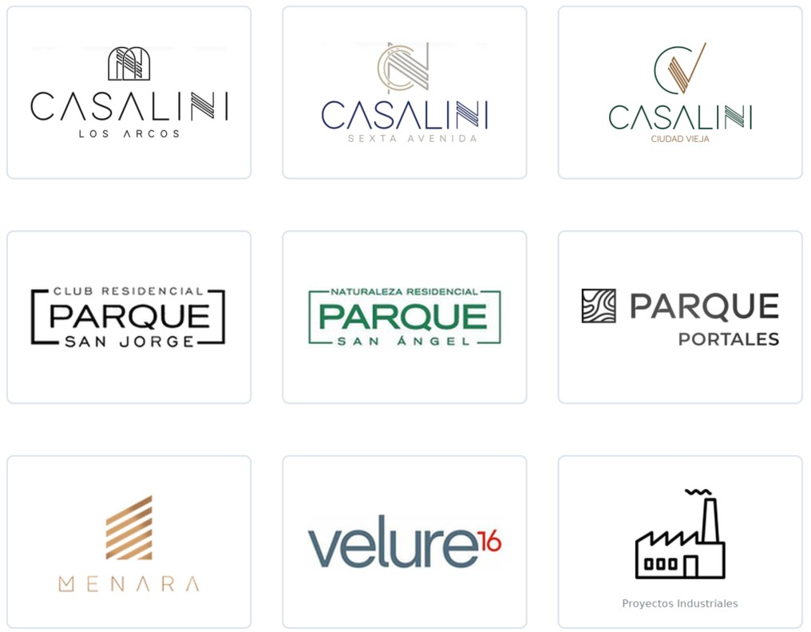

Arquitecto egresado de la Universidad de San Carlos de Guatemala y Máster en BIM y Diseño Integrado por la Universitat de Barcelona. Actualmente se desempeña como Gerente de Diseño, participando en el desarrollo integral de proyectos residenciales verticales, desde su conceptualización y diseño hasta la construcción y entrega de las unidades a los clientes finales.
Cuenta con más de ocho años de experiencia en diseño, planificación, coordinación y gestión de proyectos de vivienda vertical.
A lo largo de su trayectoria profesional ha liderado equipos multidisciplinarios y participado en procesos de factibilidad, planificación constructiva, coordinación de especialidades e implementación de la metodología BIM.
Su experiencia en el desarrollo de edificios de apartamentos le ha permitido conocer directamente los retos asociados con la densificación, el crecimiento urbano y la transformación de la Ciudad de Guatemala.
2022 - 2023
Máster en BIM y Diseño Integrado
Universitat de Barcelona / Econova
2012 - 2019
Licenciatura en Arquitectura
Universidad de San Carlos de Guatemala
2025 - ACTUALIDAD
Gerente de Diseño - Edificios
Estilo Urbano
2023 - 2025
Arquitecto Líder de Proyectos
Danta Arquitectura
2021 - 2023
Arquitecto Senior
Danta Arquitectura
2019 - 2021
Arquitecto Modelador Senior
Danta Arquitectura
2018 - 2019
Arquitecto Planificador Junior
Danta Arquitectura
Selección de proyectos residenciales verticales e industriales.
Proyectos Industriales
